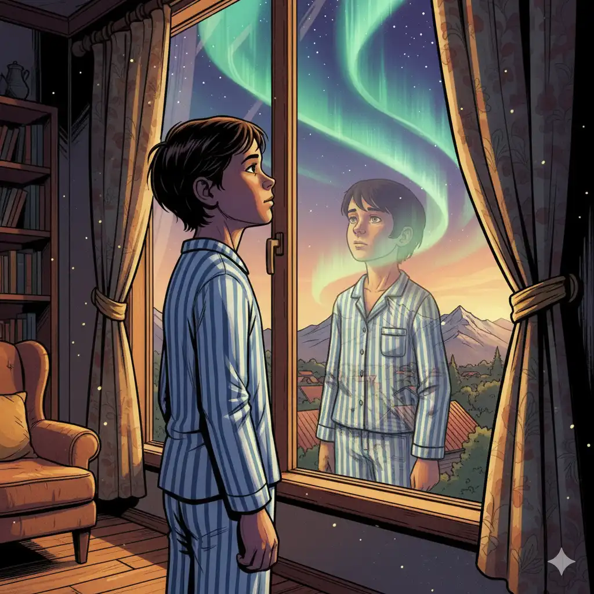
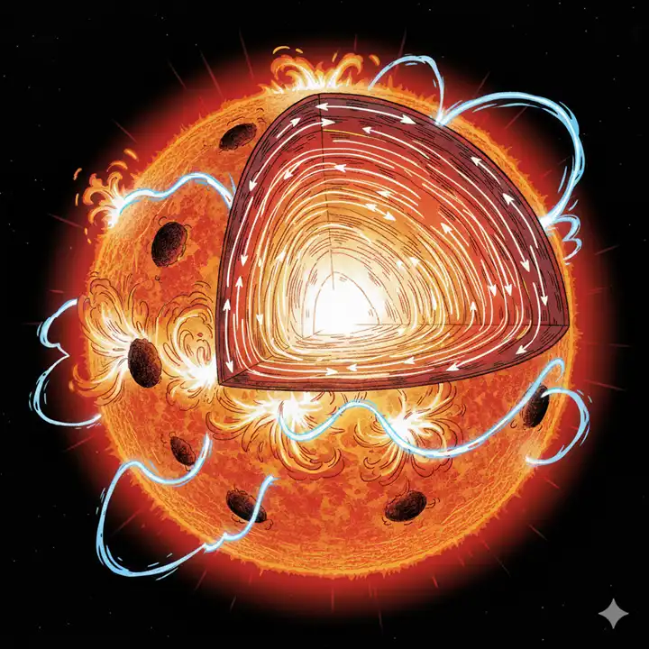
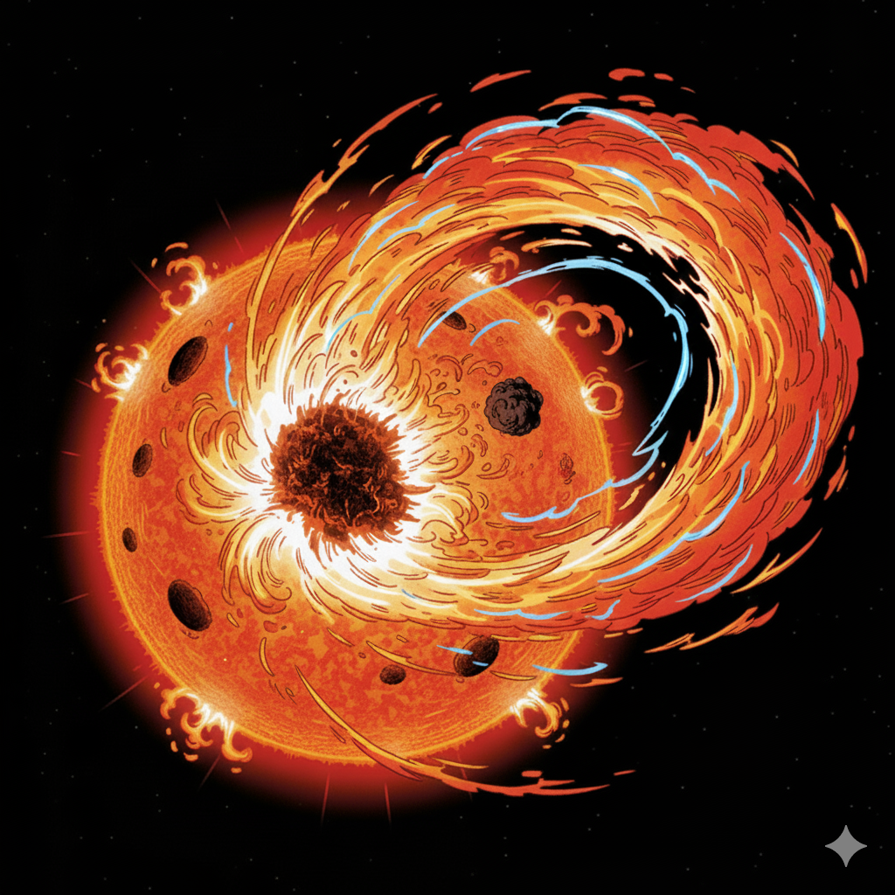
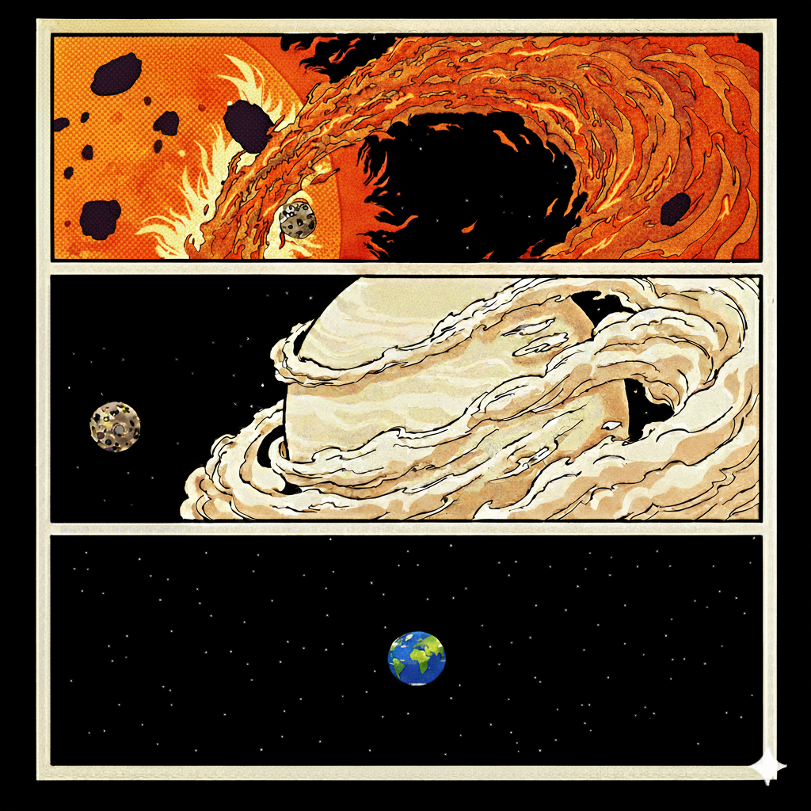
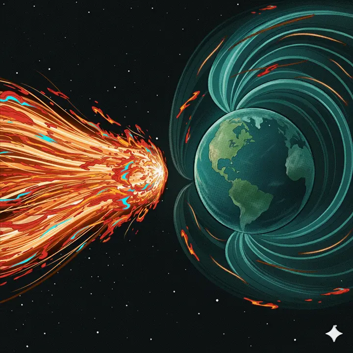
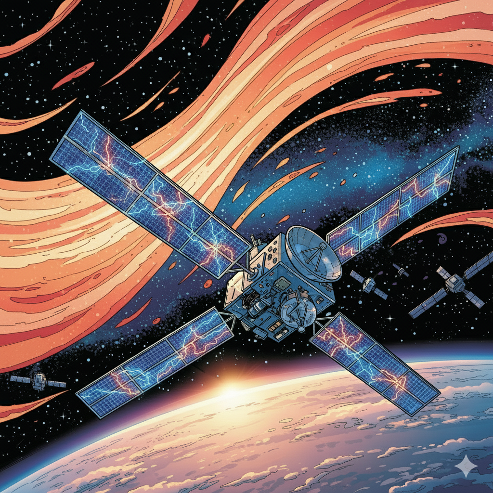
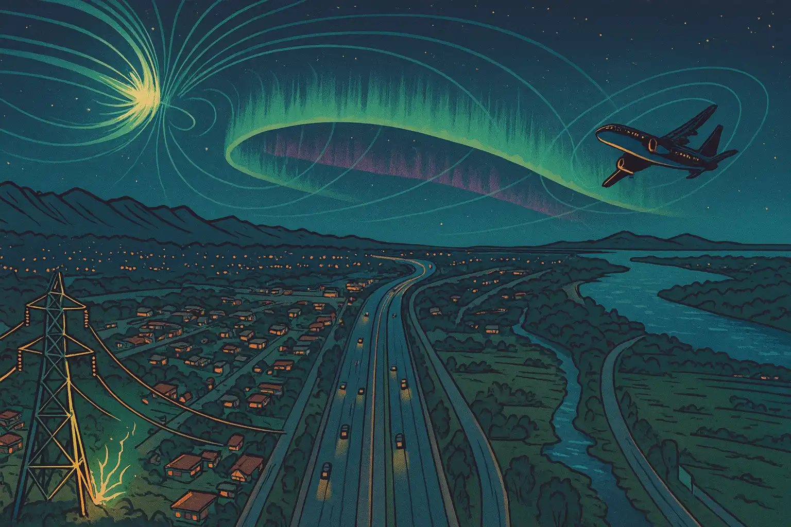
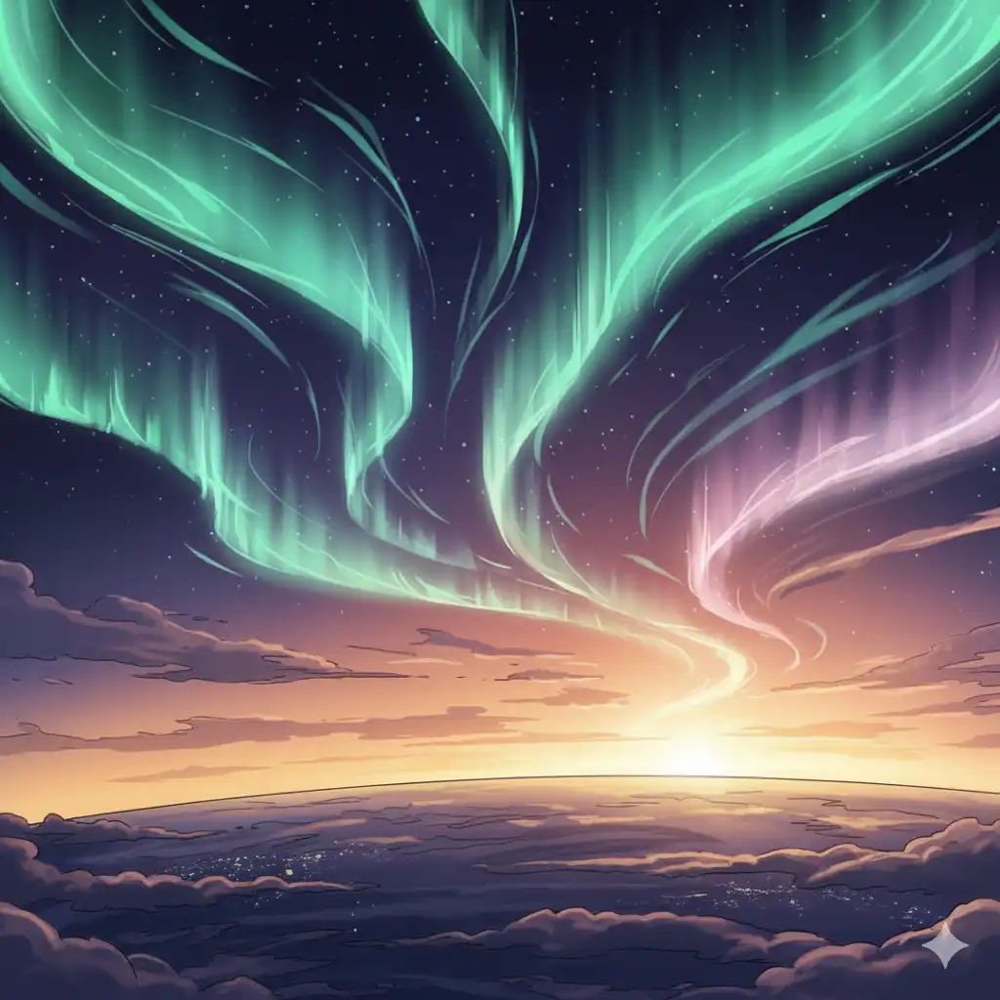
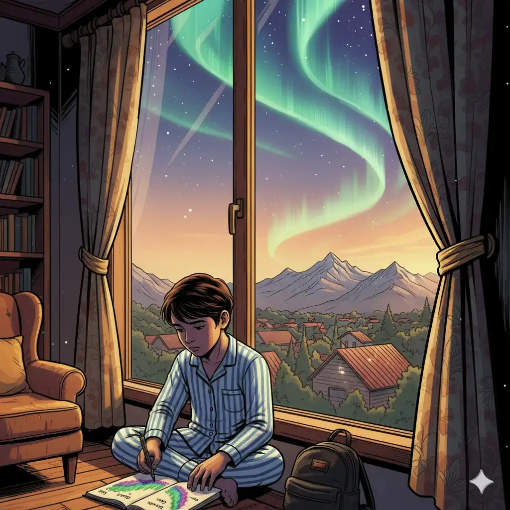
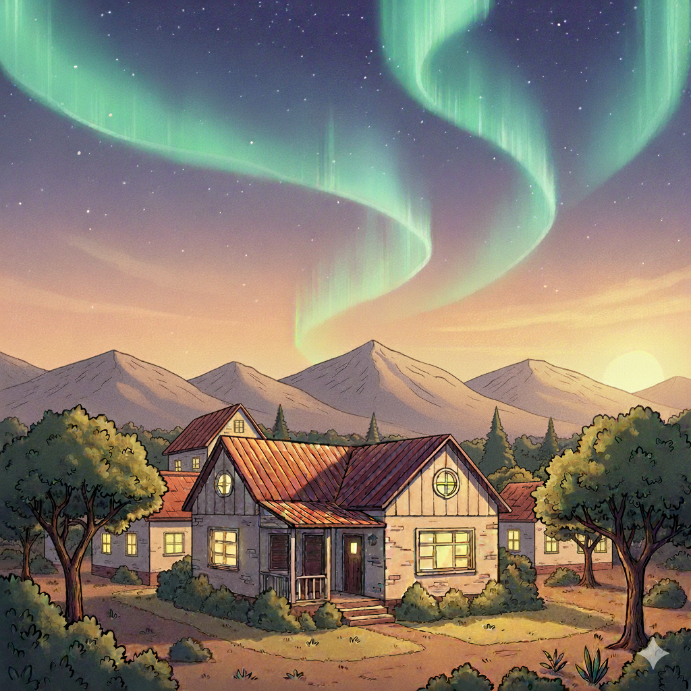

From San Luis, the AuroraSLabs team brings you this story.
Curtains of light over the Sierras
Lihué woke before dawn in La Punta. The house felt strange: the microwave clock was blank, and the computer wouldn’t turn on. —“Power outage?” —they wondered.
They walked to the window and pulled back the curtain. Outside, the Sierras de San Luis looked the same as always—except for something impossible. Above the hills, the sky held green curtains with touches of violet drifting slowly, as if someone were waving a theater curtain made of light.

—“What is that?” —Lihué whispered. They didn’t know this story had begun hours earlier—far from Earth, inside the Sun.
🔬 The science behind: Aurora colors
Red (O 630 nm)
🔬 What are you seeing?
Simplified mix of emissions: red (O 630 nm) >~200 km, green (O 557.7 nm) ~100–200 km (peak ~115 km),
blue/violet (N₂⁺ 427.8 nm) ~90–120 km, with violet-pink below ~100 km.
Inside the Sun
Deep inside the Sun, in the heart of a dark sunspot, tides of plasma heaved and tangled. One current burned brighter—restless, tugging hard at the magnetic threads.
🔬 The science behind: Why do sunspots look dark?
Sunspots are areas on the Sun’s surface with an extra-strong magnetic field.
Crowded field lines act like a lid and suppress convection—the bubbling that
normally brings hot plasma upward.
With less heat arriving, a sunspot is cooler (≈3,800–4,500 K) than the surrounding
photosphere (≈5,800 K), so it emits less light and looks dark by contrast—even though
it’s still very hot and bright.
The dark center is the umbra; the lighter, streaky ring around it is the
penumbra.

—“Careful,” —the other tides murmured—.“You’ll cause trouble.”
—“I want to see what’s beyond,” —said the bright current. The threads tightened, trembled—then—snap!
Light and magnetized plasma exploded outward, racing into space. In that instant the current became something new: a vast, swirling cloud—a coronal mass ejection.
“There goes ‘Antü’ again,” the others cried, “always making trouble!” But Antü didn’t turn back. Newborn and blazing, they were already leaving the Sun, eager for whatever lay ahead.

Back on the surface, the Sun’s radiant family stirred—the children born from its burning heart. The Solar Flares, fierce and proud, burst out as flashes of light and heat. The Solar Wind, calm and patient, whispered through space every day. And then there was Antü—heavier, slower, filled with magnetic fire.
Together, they formed a solar storm, the greatest the solar system had seen in ages.
Crossing the Inner Worlds
The Sun slowly grew smaller behind. Around “Antü,” there was silence—no sound, no warmth, no home. Space felt vast and empty.
Soon, a calm voice reached them: the Solar Wind, flowing beside them. “You’re new here,” said the Solar Wind. “Where are you headed?” “I don’t know,” answered “Antü.” “I just want to see what’s out there.” “Then you’ll have to learn patience,” said the Wind. “Each of us moves differently—I’ll reach Venus in three days.”

🔬 The science behind: How fast do solar storms travel?
The steady solar wind, coronal mass ejections (CMEs), and solar flares move at very different speeds across the Solar System.
Light and X-rays from a flare reach Earth in about 8 minutes (they travel at the speed of light).
The steady solar wind usually flows at ~300–800 km/s, taking ~2–6 days to reach Earth (example: 400 km/s ≈ 4.3 days to travel 1 AU ≈ 150 million km).
A CME is a large cloud of magnetized plasma: average CMEs arrive in ~1–3 days; the fastest can arrive in ~15–24 hours.
Very energetic particles from some flares (SEPs) can arrive in ~10–60 minutes, but the bulk CME arrives later and drives most geomagnetic storms.
Antü continued forward, glowing and curious. They passed Mercury, too bright and near the Sun to welcome anyone. Then Venus, wrapped in silver clouds that hid its surface from sight. The Solar Wind slowed and drifted away. “Good luck, little spark,” it whispered.
For the first time, Antü felt alone. The cold of space was growing deeper. The warmth of the Sun no longer reached.
The Blue Shield
Still, Antü pressed onward—a streak of golden fire moving toward a distant blue world. After hours of traveling, Antü noticed a force pushing back. Something invisible was slowing them, bending their path.
They saw what it was: a small, shining world suspended like a pale blue dot in the dark—Earth. “What is that place?” Antü wondered. “Why does it resist me?”

They felt both fear and fascination. The invisible force was the Earth’s magnetic field, a giant shield that curved around the blue planet, deflecting most of the Sun’s fury. “Who are you?” Antü asked. A deep, silent voice answered: “I am Earth’s shield. You cannot pass, but you may dance upon my edges.”
Curiosity was stronger. Antü leaned in. “Just a little closer,” they whispered, and brushed the edge of Earth’s shield. A tremor spread around the planet. Satellites shuddered as waves of magnetic energy washed over them. Signals flickered and hissed.

Antü swept through a metal machine orbiting high above the clouds—a satellite. Its screen blinked, and its circuits went silent. “I didn’t mean to hurt it,” Antü murmured, startled. “Why does everything here break so easily?” They didn’t yet understand that they carried the Sun’s strength.
When the Sky Dances
Below, long, bright lines—the power grids—shivered as invisible currents raced through them. In some places, lights went out all at once. Airplanes circled, unable to speak with the towers below. Even ships in faraway seas drifted, their compasses spinning wildly. Radios crackled and gave only static.
The sky shimmered, charged with invisible electricity. Antü felt confusion—what was happening to this world? “Did I mean to cause so much trouble?” Antü wondered, seeing all the flickers and shadows spreading below.

🔬 The science behind: Why does the power goes out?
When a solar storm reach earth it can cause magnetic field disturbances.
This creates electric currents in the ground and metal things, like power lines or pipelines.
These are called geomagnetically induced currents.
They can damage transformers and power lines, causing blackouts or overloads, and can also corrode oil, gas, or water pipelines.
Then something new began. As “Antü’s” energy touched the upper edge of Earth’s atmosphere—the ionosphere—tiny atoms of oxygen and nitrogen started to dance, spinning and swaying in invisible waves. Their dance released colors—oxygen glowed red and green, while nitrogen shimmered in blue and violet.
Antü was changing. They became an aurora—an extraordinary shimmering curtain, waving far beyond the poles, above the Sierras of San Luis.

🔬 The science behind: Why the aurora has colors?
Auroras happen when tiny particles from the solar wind bump into atoms of
oxygen and nitrogen high up in Earth’s atmosphere.
Oxygen glows green when it’s about 100–300 kilometers above the ground,
while nitrogen adds blue and purple shades to the light show.
At higher altitudes, oxygen can also produce a rare red glow.
The exact colors depend not only on the type of molecule, but also on how dense
the atmosphere is at that height — fewer molecules mean particles travel deeper
before colliding, changing the mix of colors we see.
When the Sun Painted Our Sky
In La Punta, Lihué still watched from the window, eyes wide. The lights above the mountains shifted from emerald green to deep blue, from violet to threads of warm gold. Far away, swallows flew in zigzags, as though unsure which way was north. They landed together on the old algarrobo tree, ruffling their wings.
On the battery radio, a reporter’s voice crackled: “Whales are turning off course in the southern seas tonight. Fishermen say the ocean feels strange.” Lihué crept outside, toes curling in the cold grass, looking up with awe. “What’s happening to the sky?” they whispered.

High above, Antü was fading. Their energy spread thinner and thinner, until they were only colors dissolving into the sky. For a moment, Antü felt peace. “So this is what it means to touch a world,” they thought. They disappeared softly into the atmosphere, leaving behind the light of a thousand colors.

Lihué watched until the last shimmer vanished. They ran inside and opened their sketchbook. Green waves over the hills, violet ribbons in the dawn—they drew everything before it faded from memory. Under the picture, they wrote a question: Can the Sun paint our sky?
Standing by the window again, Lihué smiled. They felt they had seen something secret—the planet itself seemed alive, like a giant compass that the Sun had gently touched. That night, La Punta kept the memory of a different sky—one that beat to the rhythm of the Sun.